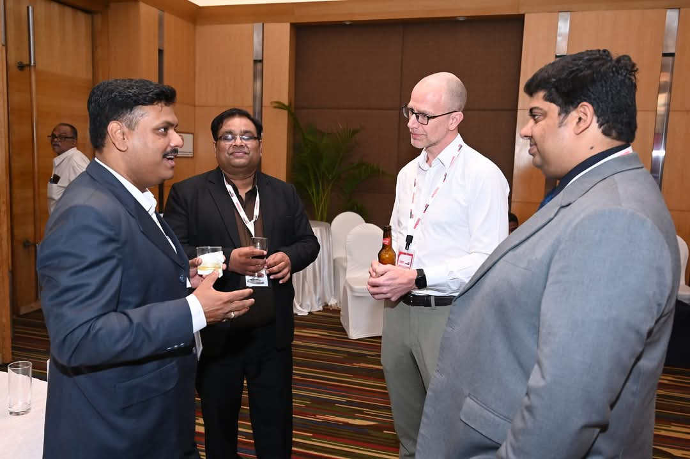

Twenty years of training rooms, field branches, and attrition curves - and what they taught me about why people stay.
I am the author of EmoShift: The Key to Success and Decoding Modern Day Managers - and a practitioner before anything else. I have spent over twenty years leading learning and organisational development in BFSI, most recently heading L&OD for a 13,000-strong, 3,000-branch workforce where about 85% of people work in the field.
The result I am proudest of: bringing infant attrition down from 118% to 53%, with an LMS, digital 2D/3D training content, and an end-to-end rebuild of how learning works in the company.
Earlier: independent consulting, Fincare (25,000+ employees, a team of 118, and RBI SPOC duties), Jana Small Finance Bank (22,000 staff), Earth Infrastructures, and Kute Build - where I was the first HR head and hired from 0 to 300 across four countries. Along the way: six national HR awards, an MDP certificate from XLRI, liaison work with the RBI, McKinsey and KPMG, and an estimated 300,000+ professionals trained across two decades.
I write about what I have actually run: retention and the first 90 days, frontline capability, microlearning and AI, and how to defend L&D's ROI to a CFO. My two books are EmoShift: The Key to Success and Decoding Modern Day Managers; a third is in draft.
Beyond the podium
Half of every conference happens between sessions - comparing notes with HR leaders, swapping field stories, and testing ideas against people who run the same rooms.

What I work on
Most attrition is decided before the first appraisal. I build onboarding that keeps the people you worked hard to hire.
Eleven thousand field officers do not learn like head-office staff. Microlearning, vernacular content, and manager-led coaching are what move the needle.
Training budgets survive when you can tie them to attrition, productivity and compliance numbers - not satisfaction scores.
Short, sharp, in the flow of work. AI makes personalisation cheap; the design discipline still has to come from us.